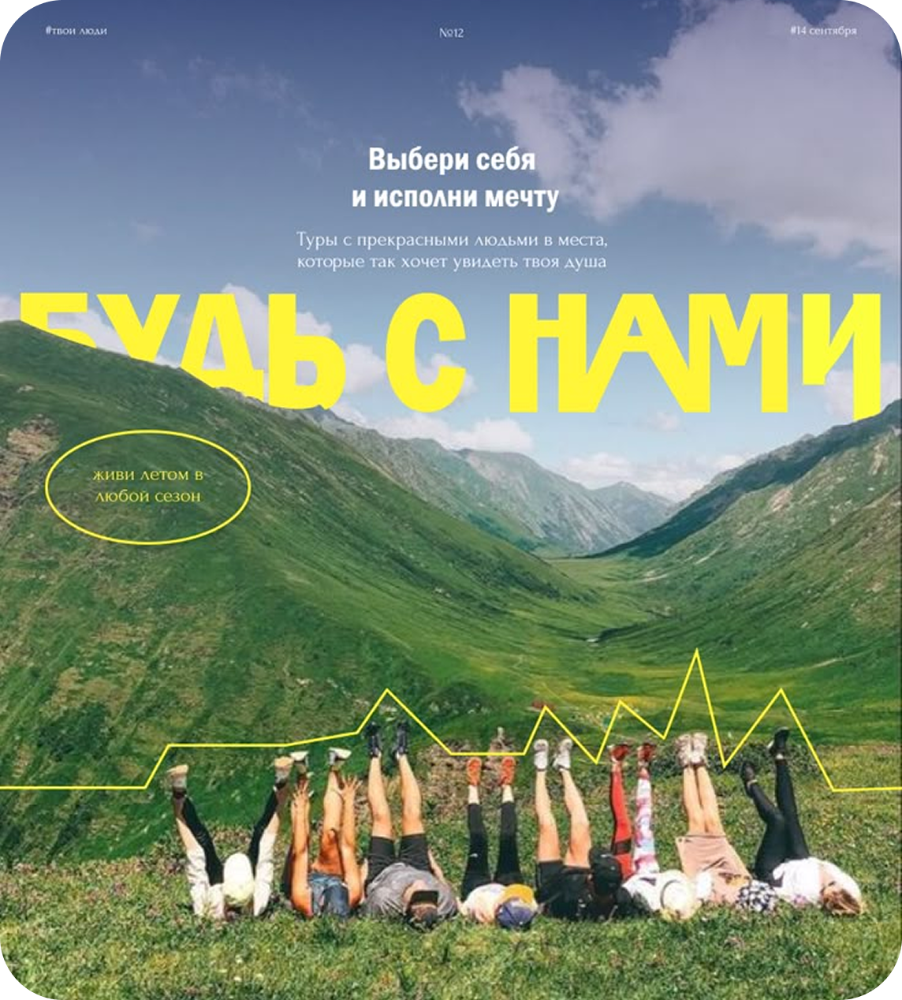
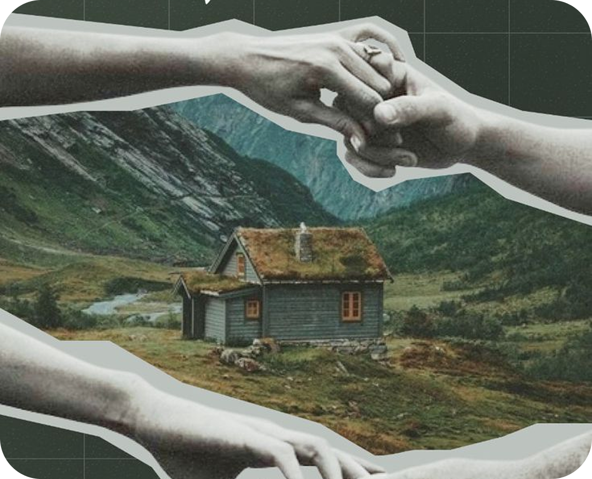

Поддержка
Единовременные выплаты. Военные, вернувшиеся с СВО, могут получить единовременные выплаты от государства. Сумма зависит от степени участия в операции и других факторов. Субсидии. Существуют субсидии на жилье, которые могут быть назначены для улучшения жилищных условий военнослужащих и их семей. Психологическая помощь. Для военнослужащих и их семей доступны услуги психологов и консультантов, которые помогают адаптироваться к мирной жизни. В различных субъектах России можно найти программы помощи, которые могут включать в себя различные меры поддержки, такие как обучение, переобучение, трудоустройство и социальные услуги.


Существуют общественные организации и фонды, которые помогают ветеранам и их семьям, предоставляя юридическую и социальную поддержку, а также организуя мероприятия и встречи для повышения социальной активности.
В некоторых регионах реализуются специальные программы по обеспечению жильем семей военнослужащих, которые могут включать выделение земельных участков или построение нового жилья.